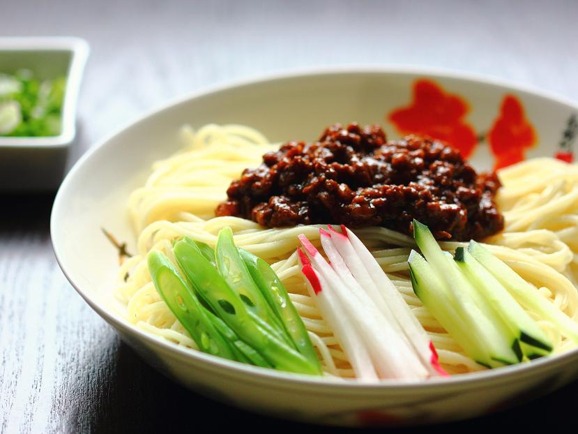
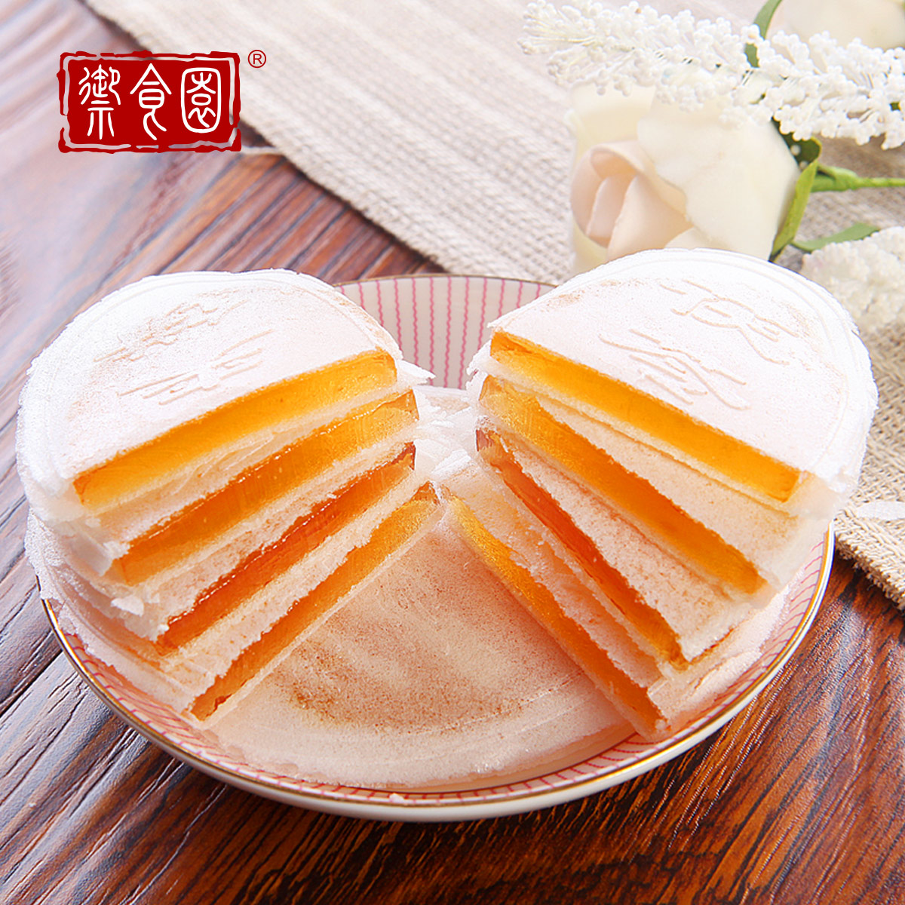

Beijing roast duck or Peking Duck (北京烤鸭 běijīng kǎoyā /bay-jing kaow-yaa/) is the epitome of Beijing cuisine and if you had to choose just one dish to try whilst in the capital, this would be it. The dish is mostly esteemed for the thin, crispy skin, with authentic versions of the dish serving mostly skin and little meat. Whilst sauces and accompaniments will vary between restaurants (the most common being scallion and cucumber) it is difficult to go wrong with roast duck in Beijing. Read more at China Highlights
Noodles with Soybean Paste / Zhajiang Mian

Noodles with Soybean Paste or Zhajiang Mian (炸酱面 zhá jiàng miàn /jaa-jyang myen/)is very popular when it comes to traditional Beijing cuisine. It has three main ingredients: wide hand-pulled noodles, vegetable pieces, and pork. Vegetables vary seasonally, but there are never less than seven kinds. It is an ideal lunch time snack for visitors short on time as it is usually ready seconds after you order. As an added bonus it is very inexpensive. Read more at China Highlights
Tuckahoe Pie / Fuling Jiabing

Tuckahoe pie or Fuling Jiabing (茯苓夹饼 fúlíng jiābǐng /foo-ling jyaa-bing/) is a traditional paper-thin snack in the shape of a full moon, popular in Beijing. It consists of a basic pancake wrapped in sugar, honey and an assortment of nuts.
The herb tuckahoe has many medical effects, and therefore it is popular with Chinese people, especially women and the elderly. Read more at China Highlights
Beijing subway is the fastest transportation in downtown and it is a good way to avoid frequent traffic jams. Presently there are 18 subway lines plus one airport express line in operation. They connect city center stops such as Tiananmen Square, Qianmen, and the railway station with outlying areas.
The price is charged according to the distance. It is CNY3 for the first 3.7 miles (6km), CNY4 for 3.7 to 7.5 miles (6 to 12km), CNY5 for 7.5 to 13.7 miles (12 to 22km), CNY6 for 13.7 to 20 miles (22 to 32km), extra CNY2 for every additional 12.4 miles (20km) if distance over 20 miles (32km). A Transportation Smart Card can be used for paying. The stops are announced in both Chinese and English. Passengers can query the subway staff to avoid going in the wrong direction and wasting time.
Attractions along with Line 2: Gulou Stop: Bell and Drum Towers, Hutong and Courtyard Yonghegong Stop: Yonghe Lamasery, Guozijian, Temple of Confucius, Ditan Park Jianguomen Stop: Ancient Observatory, Xiushui Market Qianmen Stop: Tiananmen Square, Dashanlan Read more at Travel China Guide